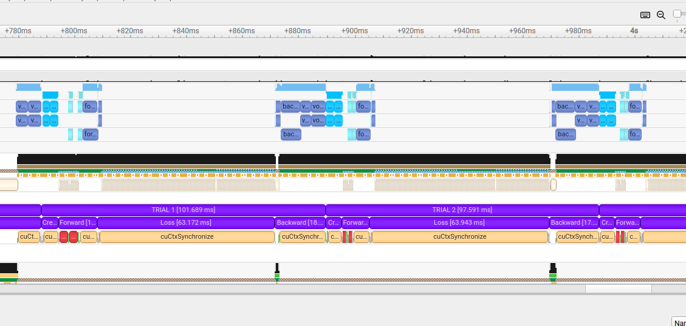

PyTorch Interoperability#
Introduction#
Warp provides helper functions to convert arrays to/from PyTorch:
w = wp.array([1.0, 2.0, 3.0], dtype=float, device="cpu")
# convert to Torch tensor
t = wp.to_torch(w)
# convert from Torch tensor
w = wp.from_torch(t)
These helper functions allow the conversion of Warp arrays to/from PyTorch tensors without copying the underlying data. At the same time, if available, gradient arrays and tensors are converted to/from PyTorch autograd tensors, allowing the use of Warp arrays in PyTorch autograd computations.
Stream Conversion#
To convert a PyTorch CUDA stream to a Warp CUDA stream and vice versa, Warp provides the following functions:
CUDA Graph Capture with PyTorch and Warp#
It is possible to capture CUDA graphs that include both PyTorch and Warp operations, as long as they run on the same CUDA stream. By default, PyTorch uses the synchronous CUDA default stream, which is not suitable for graph capture. A new stream must be created prior to capture, as shown in the examples below.
Capturing a graph using a PyTorch stream:
import torch
import warp as wp
@wp.kernel
def scale(a: wp.array[float], s: float):
tid = wp.tid()
a[tid] = a[tid] * s
n = 1024 * 1024
torch_device = wp.device_to_torch("cuda:0")
# Create a non-default PyTorch stream and convert it to Warp
torch_stream = torch.cuda.Stream(device=torch_device)
warp_stream = wp.stream_from_torch(torch_stream)
a = wp.ones(n, dtype=float, device="cuda:0")
# Capture a graph using the shared stream
with wp.ScopedStream(warp_stream):
with wp.ScopedCapture() as capture:
wp.launch(scale, dim=n, inputs=[a, 2.0])
# Replay the graph
wp.capture_launch(capture.graph, stream=warp_stream)
Capturing a graph using a Warp stream:
import torch
import warp as wp
@wp.kernel
def scale(a: wp.array[float], s: float):
tid = wp.tid()
a[tid] = a[tid] * s
n = 1024 * 1024
a = wp.ones(n, dtype=float, device="cuda:0")
# Make PyTorch use the Warp stream
torch_stream = wp.stream_to_torch("cuda:0")
# Capture a graph using the Warp stream
with wp.ScopedDevice("cuda:0"), torch.cuda.stream(torch_stream):
with wp.ScopedCapture() as capture:
wp.launch(scale, dim=n, inputs=[a, 2.0])
# Replay the graph
wp.capture_launch(capture.graph)
It can be tricky to capture arbitrary PyTorch code in CUDA graphs, because many PyTorch operations involve code that is not capturable. Some warmup steps may be required. For more information about PyTorch and CUDA graphs, see the PyTorch blog post on CUDA graphs.
Optimization Examples#
Using warp.from_torch#
An example usage of minimizing a loss function over an array of 2D points written in Warp via PyTorch’s Adam optimizer
using warp.from_torch() is as follows:
import warp as wp
import torch
@wp.kernel()
def loss(xs: wp.array2d[float], l: wp.array[float]):
tid = wp.tid()
wp.atomic_add(l, 0, xs[tid, 0] ** 2.0 + xs[tid, 1] ** 2.0)
# indicate requires_grad so that Warp can accumulate gradients in the grad buffers
xs = torch.randn(100, 2, requires_grad=True)
l = torch.zeros(1, requires_grad=True)
opt = torch.optim.Adam([xs], lr=0.1)
wp_xs = wp.from_torch(xs)
wp_l = wp.from_torch(l)
tape = wp.Tape()
with tape:
# record the loss function kernel launch on the tape
wp.launch(loss, dim=len(xs), inputs=[wp_xs], outputs=[wp_l], device=wp_xs.device)
for i in range(500):
tape.zero()
tape.backward(loss=wp_l) # compute gradients
# now xs.grad will be populated with the gradients computed by Warp
opt.step() # update xs (and thereby wp_xs)
# these lines are only needed for evaluating the loss
# (the optimization just needs the gradient, not the loss value)
wp_l.zero_()
wp.launch(loss, dim=len(xs), inputs=[wp_xs], outputs=[wp_l], device=wp_xs.device)
print(f"{i}\tloss: {l.item()}")
Using warp.to_torch#
Less code is needed when we declare the optimization variables directly in Warp and use warp.to_torch() to convert them to PyTorch tensors.
Here, we revisit the same example from above where now only a single conversion to a PyTorch tensor is needed to supply Adam with the optimization variables:
import warp as wp
import numpy as np
import torch
@wp.kernel()
def loss(xs: wp.array2d[float], l: wp.array[float]):
tid = wp.tid()
wp.atomic_add(l, 0, xs[tid, 0] ** 2.0 + xs[tid, 1] ** 2.0)
# initialize the optimization variables in Warp
xs = wp.array(np.random.randn(100, 2), dtype=wp.float32, requires_grad=True)
l = wp.zeros(1, dtype=wp.float32, requires_grad=True)
# just a single wp.to_torch call is needed, Adam optimizes using the Warp array gradients
opt = torch.optim.Adam([wp.to_torch(xs)], lr=0.1)
tape = wp.Tape()
with tape:
wp.launch(loss, dim=len(xs), inputs=[xs], outputs=[l], device=xs.device)
for i in range(500):
tape.zero()
tape.backward(loss=l)
opt.step()
l.zero_()
wp.launch(loss, dim=len(xs), inputs=[xs], outputs=[l], device=xs.device)
print(f"{i}\tloss: {l.numpy()[0]}")
Autograd Integration#
Using torch.autograd.Function (PyTorch <= 2.3.1)#
One can insert Warp kernel launches in a PyTorch graph by defining a torch.autograd.Function class, which
requires forward and backward functions to be defined. After mapping incoming PyTorch tensors to Warp arrays, a Warp kernel
may be launched in the usual way. In the backward pass, the same kernel’s adjoint may be launched by
setting adjoint = True in wp.launch(). Alternatively, the user may choose to rely on Warp’s tape.
In the following example, we demonstrate how Warp may be used to evaluate the Rosenbrock function in an optimization context.
import warp as wp
import numpy as np
import torch
# Define the Rosenbrock function
@wp.func
def rosenbrock(x: float, y: float):
return (1.0 - x) ** 2.0 + 100.0 * (y - x**2.0) ** 2.0
@wp.kernel
def eval_rosenbrock(
xs: wp.array[wp.vec2],
# outputs
z: wp.array[float],
):
i = wp.tid()
x = xs[i]
z[i] = rosenbrock(x[0], x[1])
class Rosenbrock(torch.autograd.Function):
@staticmethod
def forward(ctx, xy, num_points):
ctx.xy = wp.from_torch(xy, dtype=wp.vec2, requires_grad=True)
ctx.num_points = num_points
# allocate output
ctx.z = wp.zeros(num_points, requires_grad=True)
wp.launch(
kernel=eval_rosenbrock,
dim=ctx.num_points,
inputs=[ctx.xy],
outputs=[ctx.z]
)
return wp.to_torch(ctx.z)
@staticmethod
def backward(ctx, adj_z):
# map incoming Torch grads to our output variables
ctx.z.grad = wp.from_torch(adj_z)
wp.launch(
kernel=eval_rosenbrock,
dim=ctx.num_points,
inputs=[ctx.xy],
outputs=[ctx.z],
adj_inputs=[ctx.xy.grad],
adj_outputs=[ctx.z.grad],
adjoint=True
)
# return adjoint w.r.t. inputs
return (wp.to_torch(ctx.xy.grad), None)
num_points = 1500
learning_rate = 5e-2
torch_device = wp.device_to_torch(wp.get_device())
rng = np.random.default_rng(42)
xy = torch.tensor(rng.normal(size=(num_points, 2)), dtype=torch.float32, requires_grad=True, device=torch_device)
opt = torch.optim.Adam([xy], lr=learning_rate)
for _ in range(10000):
# step
opt.zero_grad()
z = Rosenbrock.apply(xy, num_points)
z.backward(torch.ones_like(z))
opt.step()
# minimum at (1, 1)
xy_np = xy.numpy(force=True)
print(np.mean(xy_np, axis=0))
Note that if Warp code is wrapped in a torch.autograd.Function that gets called in torch.compile(), it will automatically
exclude that function from compiler optimizations. If your script uses torch.compile(),
we recommend using PyTorch version 2.3.0+, which has improvements that address this scenario.
Using PyTorch Custom Operators (PyTorch >= 2.4.0)#
PyTorch 2.4+ introduced custom operators to replace
PyTorch autograd functions. These treat arbitrary Python functions (including Warp calls) as opaque callables, which prevents
torch.compile() from tracing into them. This means that forward PyTorch graph evaluations that include Warp kernel launches can be safely accelerated with
torch.compile(). We can re-write the previous example using custom operators as follows:
import warp as wp
import numpy as np
import torch
# Define the Rosenbrock function
@wp.func
def rosenbrock(x: float, y: float):
return (1.0 - x) ** 2.0 + 100.0 * (y - x**2.0) ** 2.0
@wp.kernel
def eval_rosenbrock(
xy: wp.array[wp.vec2],
# outputs
z: wp.array[float],
):
i = wp.tid()
v = xy[i]
z[i] = rosenbrock(v[0], v[1])
@torch.library.custom_op("wp::warp_rosenbrock", mutates_args=())
def warp_rosenbrock(xy: torch.Tensor, num_points: int) -> torch.Tensor:
wp_xy = wp.from_torch(xy, dtype=wp.vec2)
wp_z = wp.zeros(num_points, dtype=wp.float32)
wp.launch(kernel=eval_rosenbrock, dim=num_points, inputs=[wp_xy], outputs=[wp_z])
return wp.to_torch(wp_z)
@warp_rosenbrock.register_fake
def _(xy, num_points):
return torch.empty(num_points, dtype=torch.float32)
@torch.library.custom_op("wp::warp_rosenbrock_backward", mutates_args=())
def warp_rosenbrock_backward(
xy: torch.Tensor, num_points: int, z: torch.Tensor, adj_z: torch.Tensor
) -> torch.Tensor:
wp_xy = wp.from_torch(xy, dtype=wp.vec2)
wp_z = wp.from_torch(z, requires_grad=False)
wp_adj_z = wp.from_torch(adj_z, requires_grad=False)
wp.launch(
kernel=eval_rosenbrock,
dim=num_points,
inputs=[wp_xy],
outputs=[wp_z],
adj_inputs=[wp_xy.grad],
adj_outputs=[wp_adj_z],
adjoint=True,
)
return wp.to_torch(wp_xy.grad)
@warp_rosenbrock_backward.register_fake
def _(xy, num_points, z, adj_z):
return torch.empty_like(xy)
def backward(ctx, adj_z):
ctx.xy.grad = warp_rosenbrock_backward(ctx.xy, ctx.num_points, ctx.z, adj_z)
return ctx.xy.grad, None
def setup_context(ctx, inputs, output):
ctx.xy, ctx.num_points = inputs
ctx.z = output
warp_rosenbrock.register_autograd(backward, setup_context=setup_context)
num_points = 1500
learning_rate = 5e-2
torch_device = wp.device_to_torch(wp.get_device())
rng = np.random.default_rng(42)
xy = torch.tensor(rng.normal(size=(num_points, 2)), dtype=torch.float32, requires_grad=True, device=torch_device)
opt = torch.optim.Adam([xy], lr=learning_rate)
@torch.compile(fullgraph=True)
def forward():
global xy, num_points
z = warp_rosenbrock(xy, num_points)
return z
for _ in range(10000):
# step
opt.zero_grad()
z = forward()
z.backward(torch.ones_like(z))
opt.step()
# minimum at (1, 1)
xy_np = xy.numpy(force=True)
print(np.mean(xy_np, axis=0))
Performance Tuning#
The wp.from_torch() function creates a Warp array object that shares data with a PyTorch tensor.
Although this function does not copy the data, there is always some CPU overhead during the conversion.
If these conversions happen frequently, the overall program performance may suffer.
As a general rule, repeated conversions of the same tensor should be avoided. Instead of:
x_t = torch.arange(n, dtype=torch.float32, device=device)
y_t = torch.ones(n, dtype=torch.float32, device=device)
for i in range(10):
x_w = wp.from_torch(x_t)
y_w = wp.from_torch(y_t)
wp.launch(saxpy, dim=n, inputs=[x_w, y_w, 1.0], device=device)
Try converting the arrays only once and reuse them:
x_t = torch.arange(n, dtype=torch.float32, device=device)
y_t = torch.ones(n, dtype=torch.float32, device=device)
x_w = wp.from_torch(x_t)
y_w = wp.from_torch(y_t)
for i in range(10):
wp.launch(saxpy, dim=n, inputs=[x_w, y_w, 1.0], device=device)
If reusing arrays is not possible (e.g., a new PyTorch tensor is constructed on every iteration), passing return_ctype=True
to wp.from_torch() should yield better performance.
Setting this argument to True avoids constructing a wp.array object and instead returns a low-level array descriptor.
This descriptor is a simple C structure that can be passed to Warp kernels instead of a wp.array,
but cannot be used in other places that require a wp.array.
for n in range(1, 10):
# get Torch tensors for this iteration
x_t = torch.arange(n, dtype=torch.float32, device=device)
y_t = torch.ones(n, dtype=torch.float32, device=device)
# get Warp array descriptors
x_ctype = wp.from_torch(x_t, return_ctype=True)
y_ctype = wp.from_torch(y_t, return_ctype=True)
wp.launch(saxpy, dim=n, inputs=[x_ctype, y_ctype, 1.0], device=device)
An alternative approach is to pass the PyTorch tensors to Warp kernels directly.
This avoids constructing temporary Warp arrays by leveraging standard array interfaces (like __cuda_array_interface__) supported by both PyTorch and Warp.
The main advantage of this approach is convenience, since there is no need to call any conversion functions.
The main limitation is that it does not handle gradients, because gradient information is not included in the standard array interfaces.
This technique is therefore most suitable for algorithms that do not involve differentiation.
x = torch.arange(n, dtype=torch.float32, device=device)
y = torch.ones(n, dtype=torch.float32, device=device)
for i in range(10):
wp.launch(saxpy, dim=n, inputs=[x, y, 1.0], device=device)
python -m warp.examples.benchmarks.benchmark_interop_torch
Sample output:
5095 ms from_torch(...)
2113 ms from_torch(..., return_ctype=True)
2950 ms direct from torch
The default wp.from_torch() conversion is the slowest.
Passing return_ctype=True is the fastest, because it skips creating temporary Warp array objects.
Passing PyTorch tensors to Warp kernels directly falls somewhere in between.
It skips creating temporary Warp arrays, but accessing the __cuda_array_interface__ attributes of PyTorch tensors
adds overhead because they are initialized on-demand.
If you build a cache on top of these patterns (for example, keying on a tensor’s .data_ptr() or on a wp.array descriptor), invalidate the cache when the underlying Warp array is freed. A new allocation can reuse the same memory address with a different size, shape, or dtype, so pointer equality alone is not a safe cache key.
Case Study: PyTorch Deferred Gradient Allocation#
When writing custom PyTorch autograd functions that use Warp kernels, whether using analytic gradient kernels or the Warp tape, PyTorch’s deferred gradient allocation can cause unexpected synchronization delays. This case study demonstrates the problem and provides practical solutions.
The Problem: Deferred Gradient Allocation#
PyTorch employs a deferred allocation strategy for gradient tensors. When you create a tensor with requires_grad=True,
PyTorch does not immediately allocate memory for the gradient. Instead, gradients are allocated on-demand during
the backward pass.
However, when wp.from_torch() encounters a tensor with requires_grad=True but no allocated gradient,
it forces the gradient to be allocated immediately. This creates overhead that can significantly impact performance.
When PyTorch later discovers that an external framework has allocated its gradient tensors, it must perform an expensive device-wide synchronization to ensure correctness. This synchronization overhead can significantly impact performance.
Here’s an example that demonstrates the problem:
import warp as wp
import torch
device = 'cuda'
N = 300_000_000
@wp.kernel(enable_backward=False)
def forward_kernel(
a: wp.array[float],
b: wp.array[float],
output: wp.array[float]
):
i = wp.tid()
x = a[i]
y = b[i]
output[i] = x*x + y*y
@wp.kernel(enable_backward=False)
def backward_kernel(
grad_output: wp.array[float],
a: wp.array[float],
b: wp.array[float],
grad_a: wp.array[float],
grad_b: wp.array[float]
):
i = wp.tid()
x = a[i]
y = b[i]
adj_z = grad_output[i]
grad_a[i] = 2.0 * x * adj_z
grad_b[i] = 2.0 * y * adj_z
class WarpFunction(torch.autograd.Function):
@staticmethod
def forward(ctx, a, b):
ctx.save_for_backward(a, b)
device = wp.device_from_torch(a.device)
output = torch.empty(N, device=a.device)
wp.launch(
kernel=forward_kernel,
dim=(N),
device=device,
inputs=[
wp.from_torch(a), # ⚠️ Triggers gradient allocation
wp.from_torch(b), # ⚠️ Triggers gradient allocation
wp.from_torch(output),
],
)
return output
@staticmethod
def backward(ctx, grad_output):
a, b = ctx.saved_tensors
device = wp.device_from_torch(a.device)
grad_a = torch.empty_like(a)
grad_b = torch.empty_like(b)
wp.launch(
kernel=backward_kernel,
dim=(N),
device=device,
inputs=[
wp.from_torch(grad_output.contiguous()),
wp.from_torch(a),
wp.from_torch(b),
wp.from_torch(grad_a),
wp.from_torch(grad_b),
],
)
return grad_a, grad_b
a = torch.randn(N, device=device, dtype=torch.float32, requires_grad=True)
b = torch.randn(N, device=device, dtype=torch.float32, requires_grad=True)
torch.cuda.synchronize()
for i in range(TRIALS):
with wp.ScopedTimer(f"TRIAL {i}", use_nvtx=True, synchronize=True):
with wp.ScopedTimer("Create Tensors", use_nvtx=True, synchronize=True):
a_torch = a.clone().detach().requires_grad_(True)
b_torch = b.clone().detach().requires_grad_(True)
with wp.ScopedTimer("Forward", use_nvtx=True, synchronize=True):
output_warp = WarpFunction.apply(a_torch, b_torch)
with wp.ScopedTimer("Loss", use_nvtx=True, synchronize=True):
loss_warp = output_warp.sum()
with wp.ScopedTimer("Backward", use_nvtx=True, synchronize=True):
loss_warp.backward()
When profiling this code with NVIDIA Nsight Systems, significant gaps appear in the GPU timeline, indicating device-wide synchronization events:
{kind=link}

NVIDIA Nsight Systems timeline showing synchronization gaps between Warp kernel launches and PyTorch operations.#
The gaps represent device-wide synchronizations triggered when PyTorch discovers externally allocated gradients.
This problem is particularly severe in this benchmark because new tensors (a_torch and b_torch) are created
on each iteration via .clone().detach().requires_grad_(True). Since these fresh tensors have requires_grad=True
but no pre-allocated gradients, the synchronization penalty is incurred on every single iteration.
Solutions#
There are three approaches to avoid this synchronization overhead, depending on your use case:
Solution A: Disable Gradient Tracking in wp.from_torch()
The simplest solution is to pass requires_grad=False to wp.from_torch(), preventing Warp from
auto-allocating gradients:
@staticmethod
def forward(ctx, a, b):
ctx.save_for_backward(a, b)
device = wp.device_from_torch(a.device)
output = torch.empty(N, device=a.device)
wp.launch(
kernel=forward_kernel,
dim=(N),
device=device,
inputs=[
wp.from_torch(a, requires_grad=False), # ✓ No gradient allocation
wp.from_torch(b, requires_grad=False), # ✓ No gradient allocation
wp.from_torch(output, requires_grad=False),
],
)
return output
@staticmethod
def backward(ctx, grad_output):
a, b = ctx.saved_tensors
device = wp.device_from_torch(a.device)
grad_a = torch.empty_like(a)
grad_b = torch.empty_like(b)
wp.launch(
kernel=backward_kernel,
dim=(N),
device=device,
inputs=[
wp.from_torch(grad_output.contiguous(), requires_grad=False),
wp.from_torch(a, requires_grad=False),
wp.from_torch(b, requires_grad=False),
wp.from_torch(grad_a, requires_grad=False),
wp.from_torch(grad_b, requires_grad=False),
],
)
return grad_a, grad_b
This approach works well when you’re managing forward and gradient tensors separately and don’t need Warp to track gradients automatically.
Solution B: Detach Tensors from the PyTorch Graph
When managing gradients outside PyTorch’s autograd graph, detaching tensors is a clean approach:
@staticmethod
def forward(ctx, a, b):
# Store detached tensors - we'll manage gradients manually
ctx.a = a.detach()
ctx.b = b.detach()
device = wp.device_from_torch(a.device)
output = torch.empty(N, device=a.device)
wp.launch(
kernel=forward_kernel,
dim=(N),
device=device,
inputs=[
ctx.a, # ✓ Detached, no requires_grad
ctx.b, # ✓ Detached, no requires_grad
output,
],
)
return output
@staticmethod
def backward(ctx, grad_output):
device = wp.device_from_torch(ctx.a.device)
grad_a = torch.empty_like(ctx.a)
grad_b = torch.empty_like(ctx.b)
wp.launch(
kernel=backward_kernel,
dim=(N),
device=device,
inputs=[
grad_output.detach(),
ctx.a, # ✓ Already detached
ctx.b, # ✓ Already detached
grad_a,
grad_b,
],
)
return grad_a, grad_b
Detaching removes tensors from PyTorch’s computational graph (and clears requires_grad), making it clear
that gradient management happens outside PyTorch’s autograd system.
Solution C: Pre-allocate Gradients with PyTorch
Alternatively, you can pre-allocate gradients using PyTorch’s allocator before passing tensors to Warp. This approach works for both analytic gradient kernels and when using the Warp tape.
Variant 1: With Analytic Gradient Kernels
@staticmethod
def forward(ctx, a, b):
# Pre-allocate gradients using PyTorch's allocator
if a.grad is None:
a.grad = torch.empty_like(a)
if b.grad is None:
b.grad = torch.empty_like(b)
ctx.save_for_backward(a, b)
device = wp.device_from_torch(a.device)
output = torch.empty(N, device=a.device)
wp.launch(
kernel=forward_kernel,
dim=(N),
device=device,
inputs=[
wp.from_torch(a),
wp.from_torch(b),
wp.from_torch(output),
],
)
return output
@staticmethod
def backward(ctx, grad_output):
a, b = ctx.saved_tensors
device = wp.device_from_torch(a.device)
# Now we can use a.grad and b.grad directly
wp.launch(
kernel=backward_kernel,
dim=(N),
device=device,
inputs=[
wp.from_torch(grad_output.contiguous()),
wp.from_torch(a),
wp.from_torch(b),
wp.from_torch(a.grad), # ✓ Allocated by PyTorch
wp.from_torch(b.grad), # ✓ Allocated by PyTorch
],
)
return a.grad, b.grad
Variant 2: With Warp’s Tape (Automatic Differentiation)
@staticmethod
def forward(ctx, a, b):
device = wp.device_from_torch(a.device)
output = torch.zeros(N, device=a.device)
# Pre-allocate gradients using PyTorch's allocator
if a.grad is None:
a.grad = torch.empty_like(a)
if b.grad is None:
b.grad = torch.empty_like(b)
wp_output = wp.from_torch(output)
with wp.Tape() as tape:
wp.launch(
kernel=forward_kernel,
dim=(N),
device=device,
inputs=[
wp.from_torch(a),
wp.from_torch(b),
wp_output,
],
)
ctx.tape = tape
ctx.wp_output = wp_output
ctx.a = a
ctx.b = b
return output
@staticmethod
def backward(ctx, grad_output):
ctx.tape.backward(grads={ctx.wp_output: wp.from_torch(grad_output.contiguous())})
# Grab gradients before clearing references
grad_a = ctx.a.grad
grad_b = ctx.b.grad
# Clear context to break reference cycles and free memory
ctx.tape = None
ctx.wp_output = None
return grad_a, grad_b
This approach ensures gradients are allocated using PyTorch’s caching allocator, which properly tracks memory and stream dependencies. Pre-allocation can also be done earlier in the pipeline:
# At tensor creation time
a_torch = a.clone().detach().requires_grad_(True)
b_torch = b.clone().detach().requires_grad_(True)
# Pre-allocate gradients immediately
a_torch.grad = torch.empty_like(a_torch)
b_torch.grad = torch.empty_like(b_torch)
# Now safe to use in WarpFunction
output = WarpFunction.apply(a_torch, b_torch)
Performance Comparison#
Benchmarking these approaches on a workload with N=300,000,000 elements shows:
Baseline (with synchronization overhead): 98.02 ms
Solution A (requires_grad=False): 22.59 ms (4.3x faster)
Solution B (detach): 22.11 ms (4.4x faster)
Solution C (pre-allocate): 28.62 ms (3.4x faster)
All three solutions eliminate the synchronization overhead:
Solutions A and B are fastest because they allocate gradients in the backward pass as simple standalone tensors
Solution C is slightly slower because it allocates gradients in the forward pass and attaches them as
.gradattributes, which involves PyTorch’s autograd bookkeeping
Choose based on your workflow:
Solution A: Most explicit about disabling gradient tracking
Solution B: Cleanest for manual gradient management
Solution C: Required when using Warp’s tape or when you need
.gradaccess
These solutions are primarily needed when working with newly created tensors in scenarios like:
Training loops that create fresh tensors each iteration
Repeated inference with dynamically allocated tensors
Any workflow using
.clone().detach().requires_grad_(True)patterns
If you recycle the same tensors across iterations (whose gradients have already been allocated), there will be no need for gradient allocation (deferred or otherwise) and therefore no synchronization overhead.